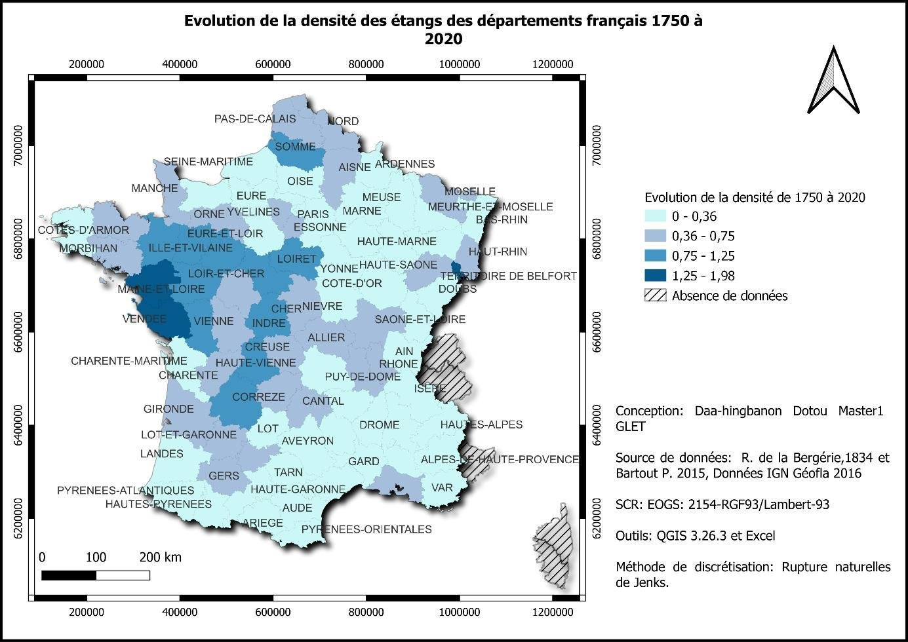
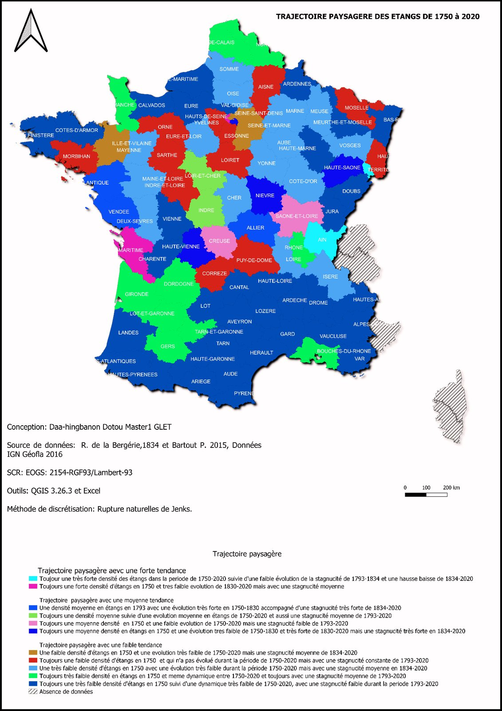

Géomatique, Limnologie, Environnement et Territoire · Université d'Orléans · 2022-2023 · SIG et géohistoire des lacs et zones humides
Géohistoire des plans d'eau en France (1750-2020)
Étude géohistorique de l'évolution des étangs dans les départements français
Contexte et objectif
La géohistoire des lacs étudie l'évolution des plans d'eau dans le temps en croisant facteurs géographiques, historiques et sociaux. Depuis 1750, les étangs français ont connu des créations massives à l'époque industrielle, puis des disparitions liées à l'urbanisation, avant une prise de conscience environnementale plus récente favorisant leur restauration. L'objectif de ce travail est d'analyser, à l'aide d'un SIG, l'évolution des étangs de 91 départements français entre 1750 et 2020, à travers deux indicateurs : leur densité et leur stagnucité (rapport entre la surface totale des étangs et la superficie du département).
Démarche et outils
Les données mobilisées proviennent de sources historiques (carte de Cassini de 1750, carte napoléonienne de 1834, données de Rougier de la Bergerie) et contemporaines (BD TOPO IGN 2020, base Ecrins de l'Agence européenne de l'environnement). Après jointure des tableaux statistiques à la couche départementale sous QGIS, la méthode de discrétisation de Jenks (rupture naturelle des classes) a été appliquée pour cartographier la densité et la stagnucité des étangs à plusieurs dates (1750, 1830, 1793, 1834, 2020), ainsi que leur évolution. Les cartes de densité et de stagnucité ont ensuite été croisées pour produire une carte de trajectoire paysagère, classant chaque département selon 11 profils d'évolution regroupés en trois grandes tendances.
Résultats
La répartition des étangs reste très inégale sur le territoire. Dès 1750, quatre départements se distinguent par une très forte densité (Charente-Maritime, Hauts-de-Seine, Territoire de Belfort, Ain), tandis que le sud du pays reste structurellement pauvre en étangs, pour des raisons géologiques. La synthèse en trajectoires paysagères types oppose des départements à très forte densité dès 1750 restée peu dynamique par la suite (Ain, Territoire de Belfort, Charente-Maritime), des départements à densité initialement moyenne ayant connu une évolution très forte entre 1750 et 1830 puis une forte stagnucité par la suite, comme la Vendée et la Loire-Atlantique (logique économique et de loisir), et des départements à faible densité structurelle peu dynamique sur toute la période, majoritairement situés au sud. Ces trajectoires reflètent l'articulation entre contraintes géologiques, décisions politiques et usages économiques de l'eau au fil de trois siècles.

